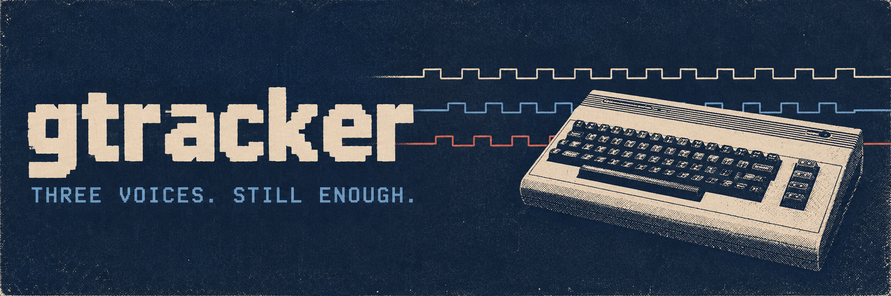

Write it. Hear it.
Enter notes from your keyboard and hear the SID as you go. Loop a pattern, make a variation, build the song. Undo the bit that sounded better in your head.

C64 SOUND / NATIVE DESKTOP / OPEN SOURCE
Do you remember C64?
Did you feel the magic of SID music?
Sometimes the best part of a C64 game was leaving the title screen running. That bass line. Those drums. All that noise coming out of one little chip.
GTracker is for making some of your own. Three SID voices, keyboard note entry, reusable patterns and realtime playback. It's 2026. We can at least have decent title music.
Enter notes from your keyboard and hear the SID as you go. Loop a pattern, make a variation, build the song. Undo the bit that sounded better in your head.
PAL/6581 sound through libsidplayfp/reSIDfp and the GoatTracker player. Presets to get moving, patterns to reuse, sections to arrange.
Editable song files, Save As, undo/redo and recovery copies. Everything stays local. No account required.
FROM THREE VOICES TO THE WORLD
MP4 export puts your title over three voice oscilloscopes and a full-screen spectrum. Bass on the left. Treble on the right. Upload it wherever you like.
MP4 needs FFmpeg. Windows has a verified download helper under More > Set up MP4 export. Linux uses your package manager.
READY.
Run GTracker on Windows or Linux. Downloadable releases haven't been published yet; the source is available now.
git clone https://github.com/timosaarinen/gtracker.git
cd gtracker
bun run devPython 3.10+, CMake 3.25+, Ninja and a C++17 toolchain. Bun runs the shortcut; python tools/dev.py dev works without it. No bun install needed.
On Windows, use a Visual Studio developer terminal with the Windows SDK. SID setup also needs MSYS2 at C:/msys64, with i686 GCC/SDL and UCRT64 GCC/autotools. First setup downloads checksum-pinned dependencies.
On Linux, follow the dependency and build guide. macOS releases are deferred, starting with Intel Mac verification.
Heavy and Mellow is the included original two-minute song. Pull it apart, change the lead, make the bass obnoxious. Use Save As to keep your version.
bun run dev examples/sid/heavy-mellow.sidtrk.json